Advances in Liquid Crystal Transient Thermal Imaging |
|
Project TeamAlfonso Ortega and Luis A. Tapia Project SponsorHoneywell Engines & Systems Motivation |
|
|
Thermochromic Liquid Crystals (TLC), an organic substance, reflect
light wavelength according to the temperature to which they are
exposed. As a result, different colors are observed on a TLC covered
surface, which in turn indicate the temperature of the surface. TLC's
are therefore useful in determining the isotherms of an object. The
information provided by TLC's can be further exploited to determine
convective heat transfer coefficients on an article exposed to fluid
flow. Project DescriptionTTLC Calibration
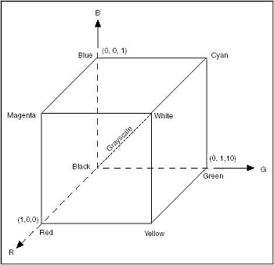 Figure 1. RGB Color Space
Calibration of the TLC is performed by the use of a calibration unit (Fig. 2) driven by a PID controller that is in turn controlled by a computer system through LabVIEW (Fig. 3). During a calibration, the PID controller sets the temperature of the TLC surface by comparing the set temperature to the process temperature, acquired by an embedded thermistor, and then outputs the power needed to drive a thermoelectric cooler (TEC). The TEC is a heat pump and in this application takes energy from the recirculating water and transfers it to the TLC surface. An IEEE 1394 camera takes RGB images of the TLC surface.
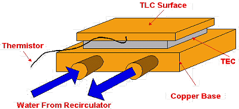 Figure 3. TLC Calibration Unit
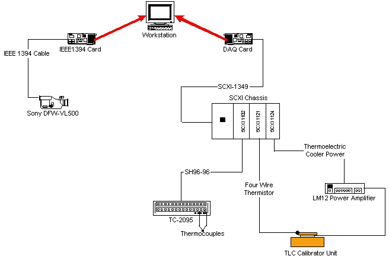 Figure 3. TLC Calibration Instrumentation
The
RGB component of interest for the experiment is G; thus, all
calibrations are presented are for this component only. Different
calibrations were performed to establish the effect of lighting
conditions, lighting intensity, number of light sources and camera
angle on the G component (Fig. 4). 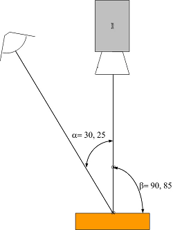 Figure 4. Camera and lights during TLC calibration
Table 1 shows the variables in the calibration process.
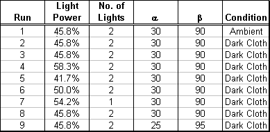 Table 1. Calibration variables
A
narrow band TLC was calibrated with a red start at 35°C and a bandwidth
of 1°C, R35CW1. It was observed that the lighting intensity affected
the green value magnitude; however, its relationship to temperature was
not (Fig. 5). The green peak value, Gmax, which is of utmost importance
in this study, seemed to occur at the same temperature. The other
variables altered both the green value magnitude and the temperature
relationship (Fig. 6); that is, the curves shifted in green values and
also shifted in temperature. However, for all of these variations Gmax
can be located in the range of 34.7°C-35.2°C which implies the
corresponding Gmax temperature can be taken as 34.95°C ± 0.25°C for any
of these conditions.
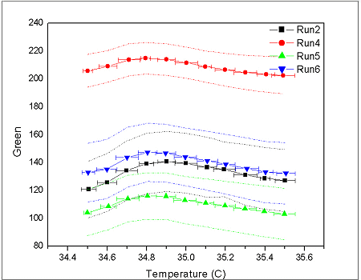 Figure 5. Effect of lighting intensity on G calibration
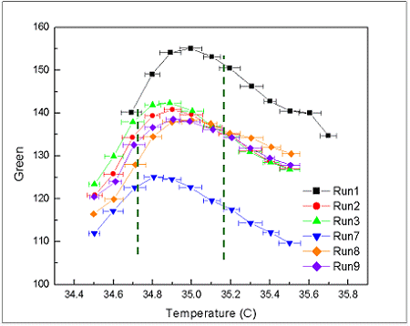 Figure 6. G calibration under various conditions
Experimental Technique
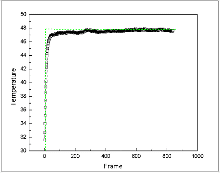 Figure 7. Gas temperature rise during experiment
Figure 8 shows the semi-infinite solid approximation and the partial differential equation and its corresponding boundary and initial conditions that describe the problem. In the partial differential equation a is the thermal diffusivity, k the thermal conductivity, h the convective heat transfer coefficients, Ti the initial test article temperature and T8 the airflow temperature. The solution of the of the semi-infinite solid approximation at the surface of the test article is given by
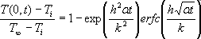
With
the physical properties of the test article known and the surface
temperature, T(0,t), determined from the TLC as well as tmax, the
problem then becomes a root finding problem in which h is determined
for every pixel in and image by the use of the Newton-Raphson method.
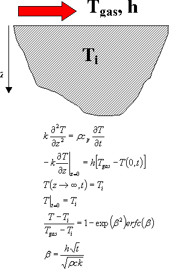 Figure 8. Semi-Infinite Solid Approximation
Experimental Apparatus 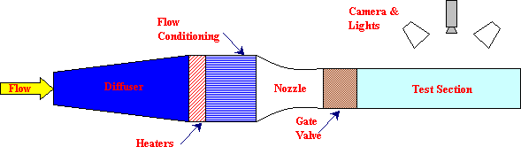 Figure 8. Wind Tunnel
Imaging-Processing Software
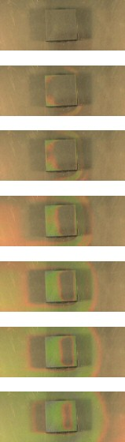 Figure 10. Images of the TLC undergoing color play
A cube of 1 in3 was covered with R35C1W at a velocity of 2.5 m/s was used to test the operation of the system. The final product is the heat transfer coefficient (HTC) distribution on the part (Fig. 11)
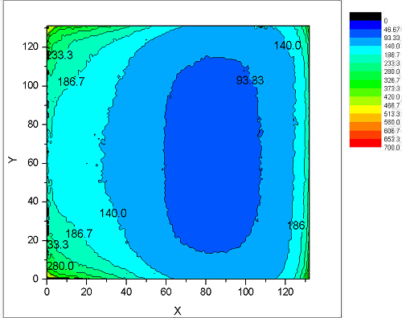 |
|